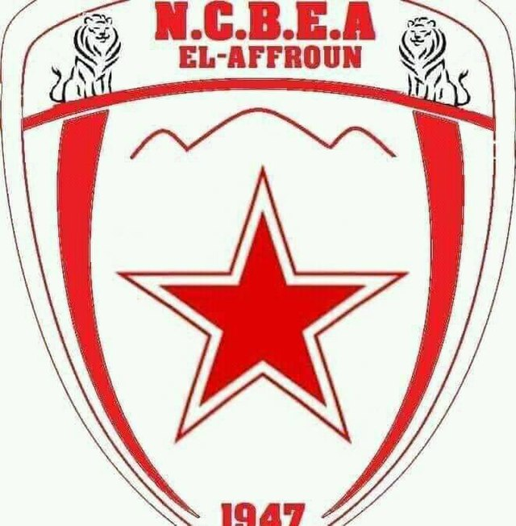

NCBEA: Le Nedjm Club Baladiyat El Affroun
نجم بلدية العفرون هو فريق رياضي جزائري أسس سنة 1947
في بلدية العفرون ولاية البليدة.
ينشط فريق نجم العفرون حاليا في الجهوي الأول، كان أحسن موسم لهذا الفريق سنة 1994/1995 حيث كان ينشط في القسم الثاني
مواجها الأندية الكبيرة.
قدم فريق نجم العفرون العديد من اللاعبين الى المنتخب الوطني و المنتخبات التي تنشط في القسم الأول ( المحترف حاليا).
من بين هؤلاء اللاعبين نجد:
ايغيلي عبد القادر اللاعب الدولي الذي قدم الكثير مع المنتخب الوطني و مع فريق شباب بلوزداد.
كمال جحمون اللاعب الدولي الذي قدم الكثير في العديد من فرق
القسم الأول مثل مولودية الجزائر، أولمبي مدية و شباب بلوزداد .
جحمون مراد اللاعب الذي احترف مع نادي الصفاقسي.
خزروني محمد لاعب دولي سابق , كان أبرز ظهور له مع فريق مولودية الجزائر.
مهداوي صالح لاعب سابق في صفوف اتحاد العاصمة .